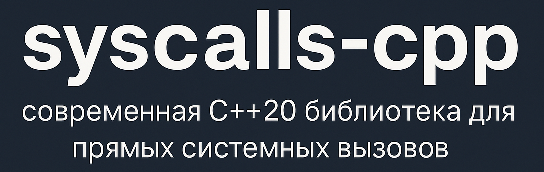

0x42
Форумчанин
- Регистрация
- 05.05.2025
- Сообщения
- 198
- Реакции
- 137

Введение
syscalls-cpp — это заголовочная библиотека на C++20, реализующая политику-ориентированный фреймворк для выполнения прямых системных вызовов в окружениях x86/x64 под Windows.
Она предоставляет модульную архитектуру, где вы можете на этапе компиляции комбинировать различные стратегии выделения памяти и генерации stub-функций для достижения оптимального баланса между безопасностью и производительностью.
Библиотека автоматически определяет номера системных вызовов, напрямую парся метаданные ntdll.dll: на x64 — через структуру exception directory, а на x86 — сортируя экспортированные функции по адресам.
Такой подход устойчив к пользовательским хукам и позволяет находить даже «соседние» вызовы, если оригинал был подменён или патчен.
Основные компоненты (политики)
Все политики разделены на три группы: выделение памяти (Allocation), генерация stub-функций (Stub Generation) и разбор метаданных (Parsing).
Любую политику аллокации можно сочетать с любой политикой генерации и разбора.
1. Политики выделения памяти
allocator::section — вызывает NtCreateSection с флагом SEC_NO_CHANGE;
allocator::heap — создает секцию через HeapCreate с HEAP_CREATE_ENABLE_EXECUTE;
allocator::memory — использует NtAllocateVirtualMemory (RW → RX).
2. Политики генерации stub-функций
generator::direct — классическая инструкция syscall внутри самостоятельного кода;
generator::gadget (только x64) — прыжок на найденный в ntdll.dll gadget «syscall; ret»;
generator::exception (только x64) — генерирует UD2 и обрабатывает его через векторный обработчик исключений (VEH).
3. Политики разбора метаданных системных вызовов
[*]parser::directory — на x64 связывает exception directory (.pdata) с таблицей экспорта, на x86 сортирует Zw функции по адресу;
[*]parser::signature — сканирует пролога функций на подпись «mov r10, rcx; mov eax, syscall_id» с учётом защиты от хуков.
Установка
Через vcpkg:
Код:
vcpkg install syscalls-cppИнтеграция с MSBuild и CMake происходит автоматически.
Ручная настройка:
Клонируйте репозиторий и добавьте папку include в пути компиляции.
Пример использования
Стандартный сценарий
C++:
#include <iostream>
#include <syscalls-cpp/syscall.hpp>
int main()
{
syscall::Manager<syscall::policies::allocator::section, syscall::policies::generator::direct> syscallManager;
if (!syscallManager.initialize())
{
std::cerr << "initialization failed!\n";
return 1;
}
PVOID pBaseAddress = nullptr;
SIZE_T uSize = 0x1000;
syscallManager.invoke<NTSTATUS>(
SYSCALL_ID("NtAllocateVirtualMemory"),
syscall::native::getCurrentProcess(),
&pBaseAddress,
0, &uSize,
MEM_COMMIT | MEM_RESERVE,
PAGE_READWRITE
);
if (pBaseAddress)
std::cout << "allocation successful at 0x" << pBaseAddress << std::endl;
return 0;
}Расширенный сценарий:
В стандартном сценарии просто получение и вызов системного вызова.
В следующим ниже фрагменте кода реализуется динамическая генерация «обфусцированного» стаба (stub) для прямого вызова системного вызова с помощью политики EncryptedShellGenerator:
C++:
#pragma warning(disable : 4146) // neg for unsigned
#include <syscalls-cpp/syscall.hpp>
#include <iostream>
#include <cstdint>
#include <array>
#include <vector>
#include <random>
#include <functional>
#include <chrono>
#include <initializer_list>
#include <cstring>
class CBufferWriter
{
public:
CBufferWriter(uint8_t* buffer, size_t size) : m_pStart(buffer), m_pCurrent(buffer), m_pEnd(buffer + size)
{
}
template<typename T>
void write(T value)
{
if (m_pCurrent + sizeof(T) <= m_pEnd)
{
*reinterpret_cast<T*>(m_pCurrent) = value;
m_pCurrent += sizeof(T);
}
}
void writeBytes(std::initializer_list<uint8_t> listBytes) {
if (m_pCurrent + listBytes.size() <= m_pEnd)
{
memcpy(m_pCurrent, listBytes.begin(), listBytes.size());
m_pCurrent += listBytes.size();
}
}
size_t getCurrentSize() const {
return m_pCurrent - m_pStart;
}
void fillRest(uint8_t uValue)
{
if (m_pCurrent < m_pEnd) {
memset(m_pCurrent, uValue, m_pEnd - m_pCurrent);
}
}
private:
uint8_t* m_pStart;
uint8_t* m_pCurrent;
const uint8_t* m_pEnd;
};
struct EncryptedShellGenerator
{
static constexpr bool bRequiresGadget = false;
static constexpr size_t kMaxStubSize = 128;
private:
enum class EOperationType { ADD, SUB, XOR, NOT, NEG, ROL, ROR };
struct ObfuscationLayer_t
{
EOperationType m_eType;
uint32_t m_uKey;
};
inline static std::mt19937 randEngine{ static_cast<unsigned int>(std::chrono::high_resolution_clock::now().time_since_epoch().count()) };
public:
static void generate(uint8_t* pBuffer, uint32_t uSyscallNumber, void* /*pGadgetAddress*/)
{
CBufferWriter writer(pBuffer, kMaxStubSize);
std::uniform_int_distribution<> operationDist(0, 6);
std::uniform_int_distribution<uint32_t> keyDist(1, 0xFFFFFFFF);
std::uniform_int_distribution<> layersDist(4, 8);
const int iAmountOfLayers = layersDist(randEngine);
std::vector<ObfuscationLayer_t> vecLayers;
vecLayers.reserve(iAmountOfLayers);
for (int i = 0; i < iAmountOfLayers; ++i)
{
EOperationType operationType = static_cast<EOperationType>(operationDist(randEngine));
uint32_t uKey = 0;
if (operationType == EOperationType::ROL || operationType == EOperationType::ROR)
uKey = keyDist(randEngine) % 31 + 1;
else if (operationType != EOperationType::NOT && operationType != EOperationType::NEG)
{
uKey = keyDist(randEngine);
if (uKey == 0)
uKey = 1;
}
vecLayers.push_back({ operationType, uKey });
}
uint32_t uEncryptedValue = uSyscallNumber;
for (auto it = vecLayers.rbegin(); it != vecLayers.rend(); ++it)
{
const auto& layer = *it;
switch (layer.m_eType)
{
case EOperationType::ADD: uEncryptedValue -= layer.m_uKey; break;
case EOperationType::SUB: uEncryptedValue += layer.m_uKey; break;
case EOperationType::XOR: uEncryptedValue ^= layer.m_uKey; break;
case EOperationType::NOT: uEncryptedValue = ~uEncryptedValue; break;
case EOperationType::NEG: uEncryptedValue = -uEncryptedValue; break;
case EOperationType::ROL: uEncryptedValue = (uEncryptedValue >> layer.m_uKey) | (uEncryptedValue << (32 - layer.m_uKey)); break; // ROR
case EOperationType::ROR: uEncryptedValue = (uEncryptedValue << layer.m_uKey) | (uEncryptedValue >> (32 - layer.m_uKey)); break; // ROL
}
}
writer.writeBytes({ 0x51, 0x41, 0x5A }); // push rcx; pop r10
writer.write<uint8_t>(0xB8); // mov eax, ...
writer.write<uint32_t>(uEncryptedValue); // ... encryptedValue
emitJunk(writer);
for (const auto& layer : vecLayers)
{
switch (layer.m_eType) {
case EOperationType::ADD:
writer.write<uint8_t>(0x05); // add eax, key
writer.write<uint32_t>(layer.m_uKey);
break;
case EOperationType::SUB:
writer.write<uint8_t>(0x2D); // sub eax, key
writer.write<uint32_t>(layer.m_uKey);
break;
case EOperationType::XOR:
writer.write<uint8_t>(0x35); // xor eax, key
writer.write<uint32_t>(layer.m_uKey);
break;
case EOperationType::NOT:
writer.writeBytes({ 0xF7, 0xD0 }); // not eax
break;
case EOperationType::NEG:
writer.writeBytes({ 0xF7, 0xD8 }); // neg eax
break;
case EOperationType::ROL:
writer.writeBytes({ 0xC1, 0xC0 }); // rol eax, key
writer.write<uint8_t>(static_cast<uint8_t>(layer.m_uKey));
break;
case EOperationType::ROR:
writer.writeBytes({ 0xC1, 0xC8 }); // ror eax, key
writer.write<uint8_t>(static_cast<uint8_t>(layer.m_uKey));
break;
}
emitJunk(writer);
}
writer.writeBytes({ 0x0F, 0x05 }); // syscall
writer.writeBytes({ 0x48, 0x83, 0xC4, 0x08 }); // add rsp 8
writer.writeBytes({ 0xFF, 0x64, 0x24, 0xF8 }); // jmp qword ptr [rsp-8]
writer.fillRest(0xCC); // int3
}
static constexpr size_t getStubSize() { return kMaxStubSize; }
private:
static void emitJunk(CBufferWriter& writer)
{
std::uniform_int_distribution<> junkDist(0, 5);
int iJunkType = junkDist(randEngine);
const uint8_t uREXW = 0x48;
const std::array<uint8_t, 6> arrPushOpcodes = { 0x50, 0x51, 0x52, 0x53, 0x56, 0x57 };
const std::array<uint8_t, 6> arrPopOpcodes = { 0x58, 0x59, 0x5A, 0x5B, 0x5E, 0x5F };
const std::array<uint8_t, 6> arrIncDecNegModRM = { 0xC0, 0xC1, 0xC2, 0xC3, 0xC6, 0xC7 };
const std::array<uint8_t, 6> arrLeaModRM = { 0x40, 0x49, 0x52, 0x5B, 0x76, 0x7F };
std::uniform_int_distribution<> regDist(0, arrPushOpcodes.size() - 1);
int iRegIdx = regDist(randEngine);
switch (iJunkType)
{
case 0:
// nop
writer.write<uint8_t>(0x90);
break;
case 1:
// push rXX; pop rXX
writer.write<uint8_t>(arrPushOpcodes[iRegIdx]);
writer.write<uint8_t>(arrPopOpcodes[iRegIdx]);
break;
case 2:
// pushfq
writer.write<uint8_t>(0x9C);
// inc rXX
writer.writeBytes({ uREXW, 0xFF, arrIncDecNegModRM[iRegIdx] });
// dec rXX
writer.writeBytes({ uREXW, 0xFF, (uint8_t)(arrIncDecNegModRM[iRegIdx] + 0x08) });
// popfq
writer.write<uint8_t>(0x9D);
break;
case 3:
// lea rXX, [rXX + 0x00]
writer.writeBytes({ uREXW, 0x8D, arrLeaModRM[iRegIdx], 0x00 });
break;
case 4:
{
// pushfq
writer.write<uint8_t>(0x9C);
std::uniform_int_distribution<uint32_t> valDist;
uint32_t uRandomVal = valDist(randEngine);
// xor rXX, imm32
writer.writeBytes({ uREXW, 0x81, (uint8_t)(0xF0 + iRegIdx) });
writer.write<uint32_t>(uRandomVal);
// xor rXX, imm32
writer.writeBytes({ uREXW, 0x81, (uint8_t)(0xF0 + iRegIdx) });
writer.write<uint32_t>(uRandomVal);
// popfq
writer.write<uint8_t>(0x9D);
}
break;
case 5:
break;
}
}
};
int main()
{
syscall::Manager < syscall::policies::allocator::section, EncryptedShellGenerator> syscallManager;
if (!syscallManager.initialize())
{
std::cerr << "failed to initialize syscall manager" << std::endl;
return 1;
}
std::cout << "syscall manager initialized successfully" << std::endl;
NTSTATUS status;
PVOID pBaseAddress = nullptr;
SIZE_T uSize = 0x1000;
status = syscallManager.invoke<NTSTATUS>(
SYSCALL_ID("NtAllocateVirtualMemory"),
syscall::native::getCurrentProcess(),
&pBaseAddress,
0,
&uSize,
MEM_COMMIT | MEM_RESERVE,
PAGE_READWRITE
);
if(pBaseAddress)
std::cout << "memory allocated: " << pBaseAddress;
else
std::cout << "failed to allocate, status:" << status;
return 0;
}Структура EncryptedShellGenerator
Это политика генерации стаба для
syscall::Manager.Она умеет:
- Случайно генерировать цепочку из 4–8 обфускационных «слоёв» (операций
ADD,SUB,XOR,NOT,NEG,ROL,ROR), каждая с собственным 32-битным ключом или сдвигом. - Предварительно «зашифровывать» номер системного вызова путём последовательного применения обратных операций всех слоёв (чтобы в самом стубе сначала выполнить дешифровку).
- Записывать в буфер:
- Пролог для переноса
rcx→r10(push rcx; pop r10) — требуется для корректной работыsyscallна x64. - Инструкцию
mov eax, <encryptedValue>(Мнемоника0xB8 …) со «зашифрованным» номером. - Случайный «мусор» (
emitJunk) — одна из пяти вариаций, чтобы шумить статический анализ в памяти. - Блок расшифровки: для каждого слоя по очереди генерируется нужная машинная инструкция (
add eax, key,sub eax, key,xor eax, key,not eax,neg eax,rol eax, imm8,ror eax, imm8), с чередованием мусора. - Наконец, сам
syscall(0x0F 0x05), корректное выравнивание стека (add rsp, 8) и переход по адресу возврата (jmp qword ptr [rsp-8]). - Паддинг до максимального размера стуба (
kMaxStubSize = 128 байт) инструкциямиint3(0xCC). Т
- Пролог для переноса
Функция emitJunk
Вставляет один из нескольких видов «бесполезных» инструкций (NOP, push/pop регистров, манипуляции флагами и т. п.), чтобы ещё больше запутать дизассемблированный код.
Основная функция
main
Код:
syscall::Manager<syscall::policies::allocator::section,
EncryptedShellGenerator> syscallManager;
if (!syscallManager.initialize()) { … }
syscallManager.invoke<NTSTATUS>(
SYSCALL_ID("NtAllocateVirtualMemory"),
syscall::native::getCurrentProcess(), &pBaseAddress, 0, &uSize,
MEM_COMMIT | MEM_RESERVE, PAGE_READWRITE
);Здесь создаётся менеджер системных вызовов, который:
- Использует политику allocator::section (создаёт исполняемую секцию через NtCreateSection).
- Для генерации каждого стаба применяет политику EncryptedShellGenerator.
После инициализации он напрямую вызывает NtAllocateVirtualMemory, указав параметры для резервирования и коммита памяти в текущем процессе.
Репозиторй, где можно скачать фреймворк:GitHub - sapdragon/syscalls-cpp: A modern C++20 header-only library for advanced direct system call invocation.
Последнее редактирование: